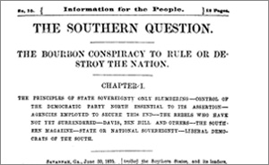

This is an archived copy of History Matters, provided by the Roy Rosenzweig Center for History and New Media. To explore this content in a new interface, visit Who Built America?.

Making of America
http://moa.umdl.umich.edu/
Created and maintained by the University of Michigan Digital Library Production Service, University of Michigan Libraries.
Reviewed March 20—April 15, 2002.
With over 3 million pages from some 10,000 volumes, the ambitious Making of America (MOA) project of the University of Michigan (UM) is a massive digital library of nineteenth-century books and periodicals. Web-savvy researchers will find full-text searching a tantalizing resource, and the digital images of hard-to-find volumes will be a useful teaching toolespecially for those without access to a research library. Because MOA is primarily an experiment in digital preservation, however, users may find access to the projects resources frustrated by poor design and (for those working at home) slow page loading. This site requires patience, but your patience will be rewarded.

The core of MOAs digital library was drawn from the brittle and decaying texts in UMs remote storage facility. While the projects online searching feature indicates that the collection spans from 1800 to 1925, its real strength is roughly 18501880. Consequently, debates over slavery and the Civil War are particularly well represented, as are other midcentury political, religious, and economic topics. The collections rather eclectic assortment of books and periodicals ranges from popular encyclopedias and almanacs, to religious tracts and poetry, to government documents, including a smattering of federal and state census reports.
Because citations lack subject headings, using MOA is more like browsing the stacks than following the logic of a card catalog. Still, keyword searching is especially useful for the periodicals, which otherwise would require more laborious browsing. Visitors to MOA may conduct complex keyword searches and may choose specific date ranges. Search results appear as a list of authors, titles, and page numbers (but no publication dates). From there you can link to individual citations and then to the page images. A search history menu allows you to retrace your steps when you get lost, while a book bag allows you to compile sources in a separate window and later link to the citations or send them as e-mail. Keyword searches are possible because the project used computer software to create rough transcriptions of the text on digital images; because this software is imperfect, however, search errors do occur regularly. MOA offers several options for viewing documents, including three image sizes, portable document format (PDF), and plain text, in addition to regular GIF (graphics interchange format) images. The PDF images will be especially helpful for classroom work, as they print at a higher quality. Viewing of document images can be difficult on smaller monitors, especially if you are browsing large pages.
Navigating MOA is complicated by its work-in-progress nature. The front pages seem out of date in both content and style and do not match the more efficient look of the search interface. More substantively, users must search books and periodicals separately, and it is difficult to switch between the two collections. The project is working toward integrating the two databases, and you may find yourself on what appears to be an experimental interface that allows searching of books and periodicals together (along with a variety of other UM digital collections). Here you cannot specify date ranges, however, nor can you easily jump back to the regular MOA interface.
MOA at the University of Michigan (along with its companion project at Cornell University,
Tobias Higbie
Newberry Library
Chicago, Illinois